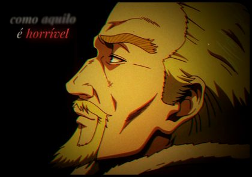
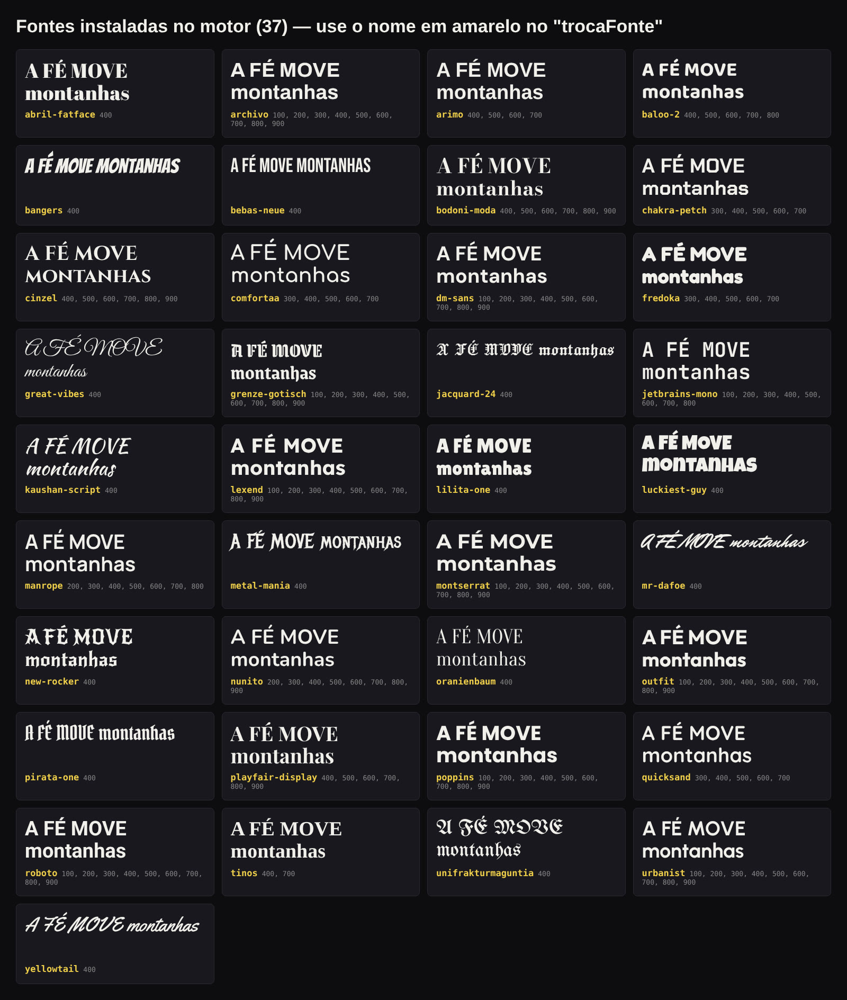
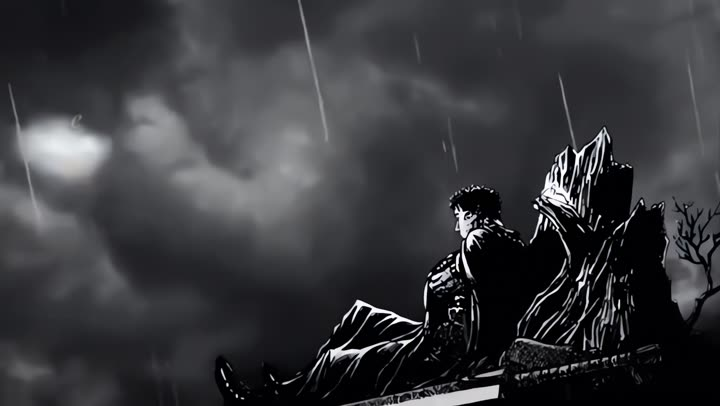

Guia de instalação e primeiro vídeo
Comece
aqui.
Do zero ao seu primeiro vídeo com o Editor no Piloto, mesmo que você nunca tenha mexido com programação.
1Criar a conta e instalar o Claude
2Abrir esta pasta nele
3Escrever "instalar"
4Digitar /comecar e fazer o 1º vídeo
Editor no PilotoComece aqui
0Antes de começar
O que você precisa
Pouca coisa. O resto o próprio Claude instala para você.
Obrigatório
- Uma conta no Claude (claude.ai). Com o plano Pro os vídeos saem mais rápido e você tem mais limite de uso.
- Um computador Windows 10/11 ou Mac (macOS 13 ou mais novo), com 4 GB de memória ou mais. Ou só o celular/navegador, pelo caminho C.
- Internet e uns 2 GB livres no disco.
Opcional
- Voz: conta no ElevenLabs ou no Fish Audio (tem opção gratuita), ou a sua própria voz gravada no celular.
- Material de fundo: GIFs, cenas e fotos. Se você não tiver, o comando
/buscar-midia procura para você.
Quanto custa por vídeo? Nada além da sua conta do Claude. A edição, a legenda e a mistura do som rodam no seu computador com programas gratuitos.
Escolha o seu caminho
ARecomendado
App do Claude no computador
Sem terminal, tudo com cliques. Para Windows e Mac. Se estiver em dúvida, vá por aqui.
→ página 3
BPara quem já usa
Terminal
O mesmo Claude Code, numa janela de comandos. Bom para quem já tem prática com o terminal.
→ página 4
CSem computador
Nuvem: celular ou navegador
Roda nos computadores da Anthropic. Precisa de uma conta grátis no GitHub.
→ página 4
Primeiro descompacte o ZIP que você baixou. No Windows: clique com o botão direito no arquivo → Extrair tudo. No Mac: clique duas vezes. Vai aparecer a pasta Editor-no-Piloto. Guarde-a em um lugar fácil, como Documentos, porque essa pasta vai virar o seu canal: tudo o que você editar fica lá dentro.
Editor no Piloto2
AApp do Claude no computador
Instalando com cliques
1
Baixe o app do Claude
Entre em claude.com/download, baixe a versão do seu sistema (Windows ou Mac), instale e entre com a sua conta do Claude.2
Abra a aba Code
No topo do app há três abas: Chat, Cowork e Code. Clique em Code.3
Escolha a pasta
Deixe marcado Local e clique em Select folder (Selecionar pasta). Escolha a pasta Editor-no-Piloto que você descompactou.4
Escreva: instalar
Só isso. O Claude lê as instruções que vêm na pasta e faz a instalação sozinho: copia os comandos, prepara o editor e instala o que faltar no computador (Git, Node.js, Python e ffmpeg, todos gratuitos).5
Feche e abra de novo
Quando ele disser "Pronto", feche o app, abra de novo, entre na mesma pasta e digite /comecar. Continue na página 5.
Claude
ChatCoworkCode
LocalCloud
📁 Documentos / Editor-no-Piloto
instalar
ClaudeBem-vindo! Esta pasta vai virar o seu canal. Vou instalar tudo agora, leva alguns minutos…
ClaudePosso rodar este comando?
PermitirNegar
Ilustração. Os nomes dos botões podem aparecer em inglês ou português.
Ele vai pedir permissão várias vezes. É normal: o Claude pergunta antes de rodar cada comando ou instalar um programa. Clique em Permitir (Allow / Yes). No Windows ou no Mac pode aparecer também uma janela do próprio sistema pedindo a sua senha ou um "Sim": pode confirmar.
A primeira instalação demora uns 5 a 15 minutos (baixa uns 300 MB de fontes, transcrição e o programa que desenha a legenda). Das próximas vezes, não precisa instalar de novo.
Editor no Piloto3
BTerminal
Pelo terminal
1
Instale o Claude Code
Windows: abra o
PowerShell (menu Iniciar → digite "PowerShell") e cole:
irm https://claude.ai/install.ps1 | iex
Mac: abra o Terminal (Cmd + Espaço → "Terminal") e cole:
curl -fsSL https://claude.ai/install.sh | bash
No Windows, instale também o Git para Windows (git-scm.com): o editor usa o Git Bash que vem com ele. Se esquecer, o Claude instala na hora.
2
Entre na pasta e abra o Claude
Feche e abra o terminal de novo. Digite
cd (com espaço),
arraste a pasta Editor-no-Piloto para dentro da janela, aperte Enter e depois:
claude
Na primeira vez, ele abre o navegador para você entrar na sua conta.
3
Escreva instalar
Depois, saia com /exit, rode claude de novo e digite /comecar.CNuvem: celular ou navegador
Sem computador
Na nuvem, a pasta do canal fica guardada no GitHub, um site grátis de guardar projetos. É lá que o Claude lê e salva os seus vídeos.
1
Crie a conta e o repositório
Em github.com, crie a conta. Depois clique em New repository, dê um nome (ex.: meu-canal), marque Private e clique em Create.2
Suba o ZIP
Na página do repositório: Add file → Upload files. Arraste o arquivo Editor-no-Piloto.zip (o ZIP inteiro, sem descompactar) e clique em Commit changes.
3
Abra no Claude
Em claude.ai/code (ou na aba Code do app do Claude no celular), conecte o GitHub quando ele pedir e escolha o repositório meu-canal.4
Escreva:
descompacte o Editor-no-Piloto.zip, leia o CLAUDE.md que vem dentro e faça a instalação
Ele instala e salva no seu GitHub. Depois, abra uma conversa nova e digite /comecar.
Deixe o repositório como Private (privado). Ele é só seu: colocar o pacote em repositório público é contra os termos de uso.
Editor no Piloto4
✓Instalado
Seu primeiro vídeo
Daqui para a frente é conversa: você fala do seu jeito, ele faz, mostra o resultado e você pede os ajustes.
1
/comecar
Conte a ideia do canal: "quero um canal de motivação com cenas de anime". Ele faz poucas perguntas e monta o seu padrão (legenda, efeito, formato e voz).2
/roteiro
Ele entrega 3 roteiros com 3 ganchos cada. Escolha um ou peça ajuste.3
/voz
Gera a narração (ElevenLabs), explica o passo a passo do Fish Audio ou usa um áudio seu.4
Fundo
Mande o GIF ou a cena (arraste para a conversa ou coloque na pasta entrada). Sem material? /buscar-midia procura.5
Edição
Ele monta com a legenda e o efeito do seu padrão e mostra o resultado. Peça o que quiser mudar.6
/post
Título, legenda, descrição, tags e horário para postar.
meu canal
/comecar Quero um canal de motivação com cenas de anime e voz grave.
/comecarCombinado! Sugestão: legenda Red Sharp + efeito sombrio, vídeo de 50 s. Vamos para o roteiro?
vamos
/roteiro3 roteiros, 3 ganchos cada:
1. "Ninguém viu as noites que você…"
Quero o 1 com o gancho B. Pode fazer a voz.
/vozNarração pronta ▶ 0:48. Quer mandar o GIF ou prefere que eu procure?
Procure uma cena de Vinland Saga.
pronto🎬 video_final.mp4 · 0:48 · 1080×1920
Deixe a legenda maior e coloque o /efeito-vhs também.
Onde fica o vídeo? Na pasta projetos, dentro da pasta do canal: uma pasta por vídeo, com o video_final.mp4. Na nuvem, peça "me mande o vídeo" e ele entrega o arquivo.
Ele aprende com você. O que você aprova e rejeita fica anotado no seu canal, e os próximos vídeos já saem mais do seu jeito.
Editor no Piloto5
/Os comandos
Tudo o que vem
Digite / na conversa para ver a lista. Ou só peça com as suas palavras: "faça com a legenda amarela". Os comandos são escritos sem acento: /comecar, /video-narracao.
Legendas

/sample-yellowAmarela de TV, palavra por palavra

/legenda-dinamicaSerifa itálica ao lado de quem fala

/legenda-3d-invisivelUma palavra por vez, relevo 3D
/misturyCartaz com fontes misturadas
/streetGritos gigantes em gótica

/rocksCromada, inclinada, em escada
/samplerocksInclinada, palavras amarelas

/invisibleLetra feita da própria imagem

/red-sharpImpacto vermelho empilhado

/fontesTroca a fonte de qualquer uma
Efeitos somam com qualquer legenda · /efeitos mostra todos

cinema

filme-antigo

manga

vhs
O comando de cada um é /efeito- + o nome. Ex.: /efeito-vhs.
Formatos de vídeo
/video-gifGIF em loop + legenda

/video-narracaoVoz sobre cenas

/video-falaLegenda em quem fala

/edit-musicaEdit na batida por nome

/video-longoYouTube horizontal
aesthetic
/aestheticImagens que ganham vida
Começo, roteiro, voz e post
/comecar | Configura o seu canal a partir da sua ideia. |
/roteiro | 3 roteiros com 3 ganchos cada, sem cara de texto de IA. |
/voz | Narração pelo ElevenLabs, Fish Audio ou a sua voz. |
/buscar-midia | Procura GIFs, fotos e cenas na internet e anota a fonte. |
/post | Título, legenda, descrição, tags e horário. |
Editor no Piloto6
+Dicas
Junte do seu jeito
Legenda + fonte de outra
"Faça com a /sample-yellow, mas com a fonte gótica da Street." A legenda continua igual, só a letra muda.
Vários efeitos juntos
"/red-sharp com /efeito-filme-antigo e /efeito-vhs." Eles se somam, na ordem pedida.
Duas legendas
Sample Yellow no vídeo todo e Red Sharp só na frase de impacto.
São mais de 40 mil combinações: 9 legendas × 38 fontes × qualquer mistura dos 7 efeitos.
A voz
ElevenLabs
Vozes muito naturais. Na primeira vez, o /voz mostra como conectar a sua conta ao Claude. Cada geração gasta créditos da sua conta, então ele gera uma de cada vez.
Fish Audio
Tem opção gratuita e vozes de personagens. O /voz explica o passo a passo; você baixa o áudio e manda na conversa.
A sua voz
Grave no celular, num lugar silencioso, e mande o áudio. O editor limpa e ajusta o volume.
Deu problema?
O comando /comecar não aparece
Feche e abra o Claude de novo na pasta do canal. Os comandos carregam quando ele abre.
Apareceu "FALTA instalar…"
Escreva "resolva isso". Ele instala o que falta (no Windows pode pedir para fechar e abrir de novo).
"Atingiu o limite de uso"
É o limite do seu plano do Claude. Espere o horário que ele mostrar e continue de onde parou.
A rede bloqueou um site (nuvem)
O Claude diz qual endereço liberar nas configurações do ambiente. Ou baixe o arquivo e mande na conversa.
Não gostei do resultado
Diga o que quer mudar, do seu jeito: "legenda maior", "mais escuro", "corte o começo". Ele refaz.
Mudei de computador
Leve a pasta do canal inteira e, no novo, escreva "instalar o motor de novo".
Termos de uso, em uma frase
A licença é sua: use em quantos canais e vídeos quiser, inclusive monetizados. Só não pode revender, compartilhar ou publicar o pacote. O texto completo está em TERMOS-DE-USO.txt. Garantia de 7 dias pela plataforma onde você comprou.
Editor no Piloto · produto independente, não oficial da Anthropic7